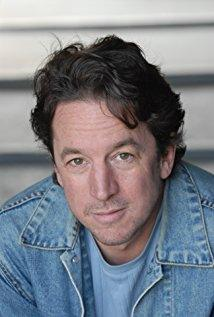
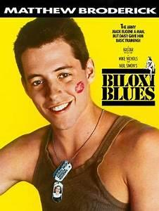
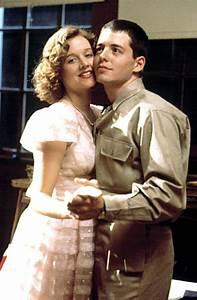
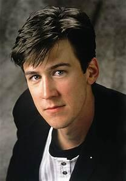
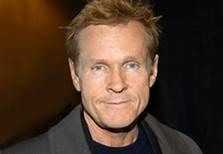
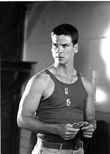
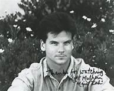
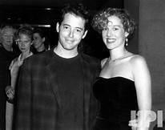

My friend, Neil Simon
Back in 1985, I was doing the Broadway Show, The Marriage of Figaro co-starring Christopher Reeve. I had a chance to hang with a lot of the young stars working in New York City and among them was Matthew Broderick. One night I was visiting the cast of Biloxi Blues and by chance the playwright Neil Simon, was walking out of the backstage door as I was walking in — it was a true Hollywood meet cute — we looked at each other smiled, I must have giggled and he invited me for an after show drink at Joe Allen’s. We talked for the next 6 months — it was an amazing time – except for the 30 year age difference — it might have turned out differently! He was a prince, so funny and he will be missed! 
Matthew Broderick played Eugene Jerome and in the cast were so many up and comers like Penelope Ann Miller, Matt Mulheron, Alan Ruck (Ferris Bueller’s Day Off), Bill Sadler and Brian Tarantina








This is a clip from the LA TIMES:
Neil Simon, whose comic touch in “The Odd Couple,” “Barefoot in the Park” and many other hits on stage and screen made him the most commercially successfully playwright of the 20th century — and perhaps of all time — has died, according to his representative. He was 91
From “Come Blow Your Horn” in 1961 to “45 Seconds From Broadway” in 2001, 30 of Simon’s plays opened on Broadway, including five musicals for which he wrote the book. Seventeen of them ran a year or more, and many were subsequently embraced by theater’s grass-roots, seen year after year across the nation as staples of community theater, dinner theater and high school productions.
Though he once described writing plays as “my lifeblood” and put screenwriting a distant second, Simon adapted 18 of his plays for film or television and wrote 11 screenplays not based on his stage work. Among his original stories for film were “The Out-of-Towners” (1970) and “The Goodbye Girl” (1977). Four of his scripts were nominated for Academy Awards.
Early in his career, critical consensus pegged Simon as an insubstantial writer more interested in drawing laughs than in probing the truth of human existence. But as time went on, he pushed to deepen his plays and expose more nakedly the pain — much of it derived from his own experience — that he identified as the engine of his comedy.
Though almost never rated as the literary peer of such elite contemporaries as Arthur Miller, Edward Albee, August Wilson and Tony Kushner, Simon did eventually achieve a fair measure of critical approval to go with his great popularity. That ascent was capped in 1991 when “Lost in Yonkers,” one of a series of autobiographical works from the 1980s and 1990s, won both the Pulitzer Prize for drama and the last of his four Tony Awards.
Simon wrote mainly about what he knew from personal experience. He kept a steady, daily, seven-hour regimen while drafting his plays, then went into overdrive with pressured late-night rewriting sessions when his shows were in rehearsals or out-of-town previews — a process he relished and valued so much that he dubbed his first memoir “Rewrites” (1996).
Simon once estimated that he started four plays for every story he finished. He often said he was driven not so much by the desire to make money or see his name on a marquee as by the sheer release he found in writing.
“To sit in a room for…hours, sharing the time with characters you have created, is sheer heaven,” Simon wrote in “Rewrites.” “And if not heaven, it’s at least [an] escape from hell.”
In “The Play Goes On” (1999), his second memoir, Simon wrote that the key to his success was that as he mined his own insecurities, others could see themselves.
He was born Marvin Neil Simon on July 4, 1927, the son of Irving Simon, who sold fabric to garment makers, and Mamie Levy Simon.
His only sibling, Danny, was eight years older and became his mentor and partner. From Simon’s mid-teens through his 20s, the brothers churned out gags for radio and nightclub comedians and sketches for stage revues and television shows.
The brothers grew up in a turbulent and insecure home. Acrimony between their parents often filled the family’s apartment in Washington Heights, at Manhattan’s northern tip. Their father moved out, returned and moved out again, leaving mother and sons to fend for themselves for as long as a year at a time.
“I remember living with a pillow over my head at nights, to block out the fights,” Simon told the New York Times in 1983.
His brother became a father figure: “He’d tell me when to go to bed, how to behave, give me all the rules of life. He wanted the best for me, and I simply would not be who I am today without him,” Simon said in a 1986 interview in Time magazine.
When he was 14, Simon and his mother moved in with relatives, sharing a room so small that they slept together in a single bed. That, Simon later wrote, “gave me more emotional scars than I would like to think of.”
He found escape in solitary pursuits — the movies, reading, building plastic models.
Danny Simon got his brother his first writing job at 15, penning sketches for the annual company follies of the Abraham & Strauss clothing store in Brooklyn, where Danny was assistant manager of the boys’ department. Simon also immersed himself in the works of humor writers such as Robert Benchley and Ring Lardner. He idolized the comic playwriting team of George S. Kaufman and Moss Hart.
Simon graduated from DeWitt Clinton High School in the Bronx at 16, briefly attended New York University in a military reserve program, and enlisted in the Army at 17 as World War II was ending. Stationed in Colorado, he worked as a sports editor for the Rev-Meter, an Army newspaper.
After mustering out of the Army as a corporal, Neil rejoined Danny, and they began writing for radio and television. In the early 1950s, the Simon brothers wrote for Sid Caesar’s “Your Show of Shows,” joining a high-powered stable that also included Mel Brooks, Carl Reiner and Larry Gelbart.
During the summer of 1953, the Simon brothers wrote sketches for entertainment programs at a resort in the Pocono Mountains of Pennsylvania. There, Neil met Joan Baim, a poetry student and children’s camp counselor. They married within three months.
After ending his partnership with his brother, Neil Simon wrote for “Caesar’s Hour,” the successor to “Your Show of Shows,” and for “The Phil Silvers Show.” He was on an unhappy sojourn in Los Angeles in 1957 writing for a Jerry Lewis television special when, he recalled in “Rewrites,” his wife asked him, “Why don’t you start that play you’re always talking about?”
He saw playwriting as an escape from the creative strictures of television — and a way to remain in New York when most of the TV world had decamped to L.A., a city he then disliked.
His first play, “Come Blow Your Horn,” opened on Broadway on Feb. 22, 1961 — after 3 1/2 years of labor that included 22 rewrites. The protagonists, a world-wise older brother and his innocent younger sibling who share an apartment, were modeled on Danny and Neil Simon; from the start, Simon was reconfiguring episodes from his own life for the stage — although he seldom considered his plays truly autobiographical.
“Barefoot in the Park” (1963) was built from his memories of the tiny Greenwich Village apartment he and Joan moved into after they married. It starred Robert Redford and Elizabeth Ashley and was the longest-running show of Simon’s career, lasting 1,530 performances and nearly four years in its Broadway run. In 1967, it was made into a movie starring Redford and Jane Fonda.
“The Odd Couple” (1965), loosely inspired by the post-divorce housekeeping Danny Simon set up with a buddy, cast Walter Matthau as the slovenly Oscar Madison and Art Carney as the neurotically fastidious Felix Ungar. It cemented Simon’s standing as a comic master and a crowd-pleaser. It was later a hit film (with Jack Lemmon and Matthau) and a TV series (with Tony Randall and Jack Klugman).
When “The Star Spangled Girl” opened in 1967, joining the already-running “Barefoot in the Park,” “The Odd Couple” and “Sweet Charity,” a musical for which he wrote the book, Simon became only the second playwright ever to have four shows on Broadway simultaneously. The other, Clyde Fitch, died in 1909.
In 1983, the Nederlander Organization renamed the Alvin Theatre in Manhattan as the Neil Simon Theatre, making him the first living playwright to have a theater named in his honor on Broadway.
Success brought only qualified happiness — and sometimes not even that — to an admittedly insecure man haunted by the upheaval of boyhood.
“I wanted a response from the audience that would make up for whatever it was that was missing from those formative years…,” Simon wrote in his memoirs, “[but] there was never enough.”
He continued churning out new plays, even during his wife’s nearly two-year struggle with cancer. She died in 1973 at age 39, leaving him with their two young daughters, Ellen and Nancy.
Devastated, Simon threw himself into psychotherapy and work. Soon, at an audition for his play “The Good Doctor,” he met actress Marsha Mason. They married a little more than three months after his first wife’s death.
This relationship, too, was dramatized in Simon’s 1977 play, “Chapter Two,” about a grieving widower, a writer, who falls into a whirlwind romance, then, guilt-ridden, tries to keep his new marriage afloat.
Mason, who starred in the 1979 film, had put her acting on hold when they first married. Feeling indebted, Simon agreed to move to Los Angeles in 1975 so she could jump-start her career. He divided his time between homes in Bel-Air and Manhattan and kept a smaller house in Westwood as a place to write. He played tennis avidly, collected modern art and watched sports on TV. He never tried to project a larger-than-life image.
“To look at him is to mistake him for an accountant or a librarian,” New York Times reporter David Richards wrote after visiting with Simon in 1991. “He dresses just this side of drab. Although he is responsible for unleashing cascades of laughter, his own laugh is a barely audible chuckle.”
Simon’s most successful original screenplay was “The Goodbye Girl,” a 1977 vehicle for Mason — the first of five Simon-scripted movies in which she starred. She was nominated for an Academy Award for best actress; Richard Dreyfuss won best actor as the romantic lead opposite her.
Simon and Mason divorced in 1982.
“I was bitterly and ferociously angry at her for leaving,” the playwright recalled in his memoirs, but they later became friends.
He would marry three more times — including twice to Diane Lander, an actress with whom he was smitten when he found her working behind the perfume counter at Neiman-Marcus in Beverly Hills. Simon became the stepfather of her young daughter, Bryn; their first marriage, in 1987, lasted a year and a half, but they had a second chapter from 1990 to 1998. In a prenuptial contract, Simon agreed never to write about their life together.
In 1999, he married actress Elaine Joyce.
In the early 1980s, Simon hit a slump when “Actors and Actresses” failed to make it past out-of-town tryouts and “Fools,” which adapted tales from Yiddish folklore, folded on Broadway in just a month.
“I had gotten far off track,” he recalled in “The Play Goes On.” “One more flop and I would be worse than a newcomer. I would be a has-been.”
Simon plucked from his drawer an unfinished script he had begun years before. It became the first play in a 1983 to 1986 trilogy that traced his life from his childhood home (“Brighton Beach Memoirs”) through Army boot camp and his experience of anti-Semitism (“Biloxi Blues”) to the final breakup of his parents’ marriage and the launching of his career as a writer (“Broadway Bound”).
The trilogy won over some of Simon’s detractors.
His standing among critics peaked in 1991, when “Lost in Yonkers,” about the knotted relationship between a steely immigrant mother and her mentally disabled daughter, won the Pulitzer Prize for drama — something Simon had predicted would never happen. The prize jury described the play as “a mature work by an enduring (and often undervalued) American playwright.”
Although he remained prolific through the 1990s and into the new century, Simon never climbed as high again. Reviews were largely negative for the Broadway and off-Broadway runs of shows such as “Jake’s Women,” “Proposals,” “London Suite” and “Rose’s Dilemma” (originally entitled “Rose and Walsh” when it premiered at Westwood’s Geffen Playhouse in 2003).
Only “Laughter on the 23rd Floor” (1993) and “The Dinner Party” (2000) topped 300 performances on Broadway and came close to being hits, although neither ran a full year.
A 1993 musical version of “The Goodbye Girl” flopped on Broadway. And in a widely publicized contretemps in December 2003, one of America’s sweethearts, Mary Tyler Moore, was seen rushing out a backstage door at the Manhattan Theatre Club — never to return — after Simon’s wife hand-delivered a caustic letter from the playwright criticizing her preview performances in the title role of “Rose’s Dilemma” and chiding her for not knowing her lines — “learn your lines or get out of my play.”
For someone who seemed so nice-guy normal, Simon’s put-down of Moore came across as shockingly cruel and — some suggested — exposed the playwright’s difficulty handling strong personalities, particularly in women.
Critics remain divided on whether Simon’s work will stand the test of time. Harold Bloom, the Shakespeare scholar and preeminent American literary critic of Simon’s era, acknowledged him as “a grand entertainer” and “a popular playwright of enormous skill” but said his achievement “fades away absolutely” when held against the strongest plays of Miller, Albee, Wilson and Kushner.
But some expect posterity to be kinder.
“You might dismiss Simon’s comedies as Broadway trifles,” Los Angeles Times theater critic Dan Sullivan wrote in 1976. “I say they are among the best Broadway trifles ever written and that the strongest of them will be a part of the living theater repertory when some far more pretentious current titles are footnotes in somebody’s PhD thesis on 20th-century American drama.”
Yet even Sullivan complained that Simon sometimes tied up stories with happier endings than the characters’ flaws and troubled circumstances warranted, giving his plays “an element of the cop-out.”
Another critic, Edythe M. McGovern, concluded in her appreciative 1978 study, “Not-So-Simple Simon,” that at the core of his work are enduring themes and values: a rejection of extremism in favor of moderation; a yearning, albeit often thwarted, for relationships that will last, and a persistent humaneness.
“Above all, there is a willingness to live and let live, or even help live,” she wrote.
God will be laughing because you will write him something funny – Love you and always will!
www.ForbesFactor.com